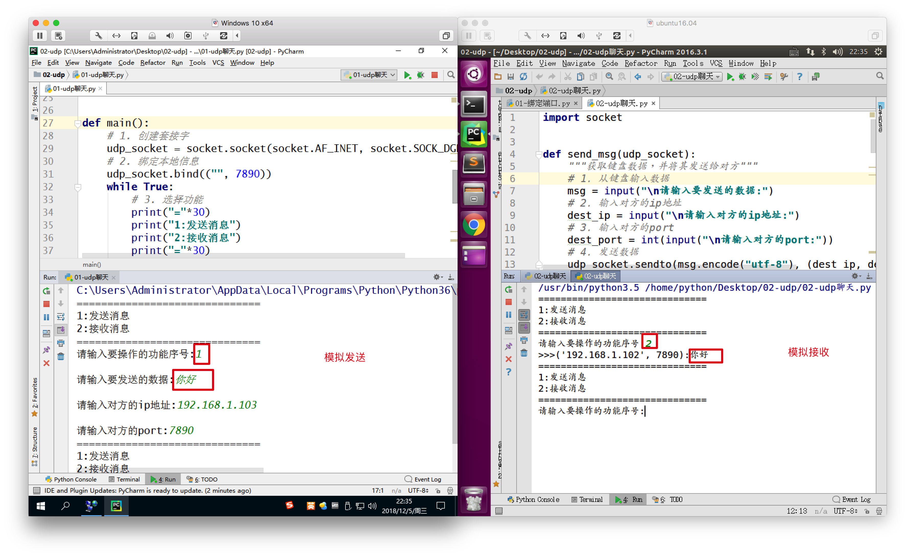

案例：UDP聊天软件
1. 想法来源
我们今天已经离不开社交软件了，例如QQ、微信等，它们有个很大的特定是能与对方进行聊天，即发送消息、接收消息，那么我们是否能够编写一个类似功能的聊天软件呢？
2. 需求分析
- 需要创建套接字，否则不能通信
- 这个套接字应该需要绑定，否则对方不知道这个程序的端口
- 应该有1个功能选择，选择发送还是接收
3. 代码实现
import socket
def send_msg(udp_socket):
"""获取键盘数据，并将其发送给对方"""
# 1. 从键盘输入数据
msg = input("\n请输入要发送的数据:")
# 2. 输入对方的ip地址
dest_ip = input("\n请输入对方的ip地址:")
# 3. 输入对方的port
dest_port = int(input("\n请输入对方的port:"))
# 4. 发送数据
udp_socket.sendto(msg.encode("utf-8"), (dest_ip, dest_port))
def recv_msg(udp_socket):
"""接收数据并显示"""
# 1. 接收数据
recv_msg = udp_socket.recvfrom(1024)
# 2. 解码
recv_ip = recv_msg[1]
recv_msg = recv_msg[0].decode("utf-8")
# 3. 显示接收到的数据
print(">>>%s:%s" % (str(recv_ip), recv_msg))
def main():
# 1. 创建套接字
udp_socket = socket.socket(socket.AF_INET, socket.SOCK_DGRAM)
# 2. 绑定本地信息
udp_socket.bind(("", 7890))
while True:
# 3. 选择功能
print("="*30)
print("1:发送消息")
print("2:接收消息")
print("="*30)
op_num = input("请输入要操作的功能序号:")
# 4. 根据选择调用相应的函数
if op_num == "1":
send_msg(udp_socket)
elif op_num == "2":
recv_msg(udp_socket)
else:
print("输入有误，请重新输入...")
if __name__ == "__main__":
main()
4. 运行效果

想一想
以上的程序如果选择了接收数据功能，并且此时没有数据，程序会堵塞在这，那么怎样才能让这个程序收发数据一起进行呢？别着急，学习完多任务知识之后就解决了O(∩_∩)O...